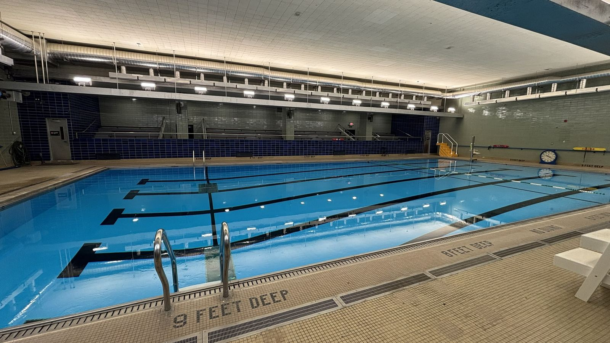
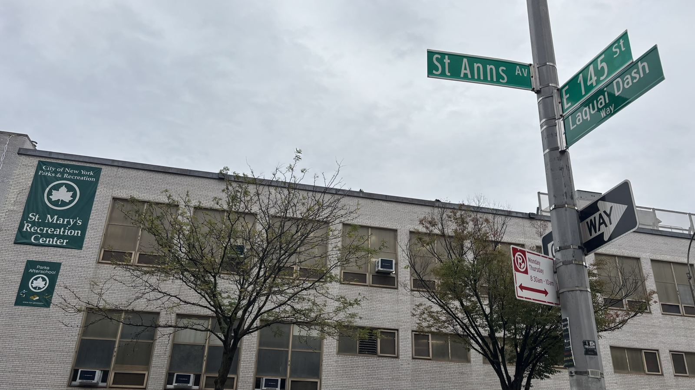
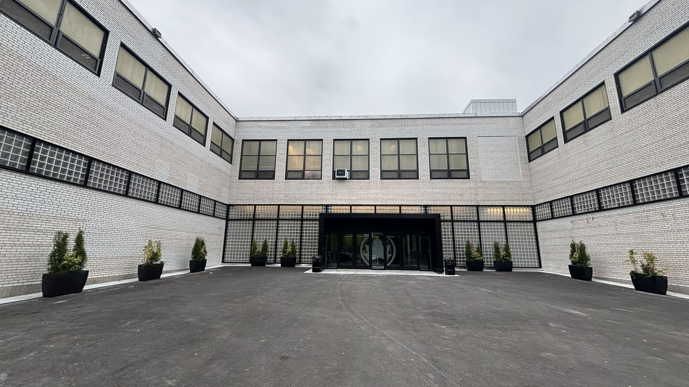
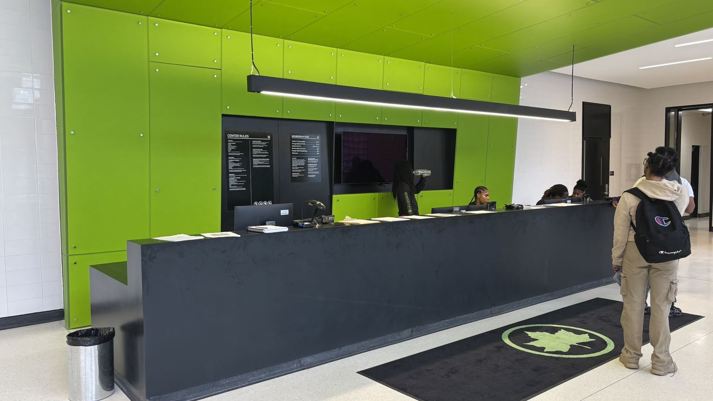
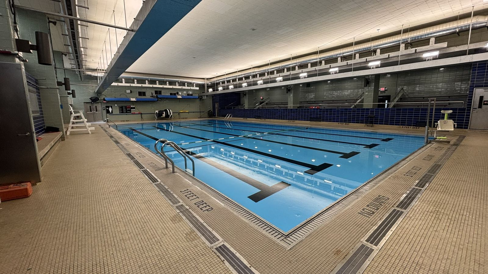
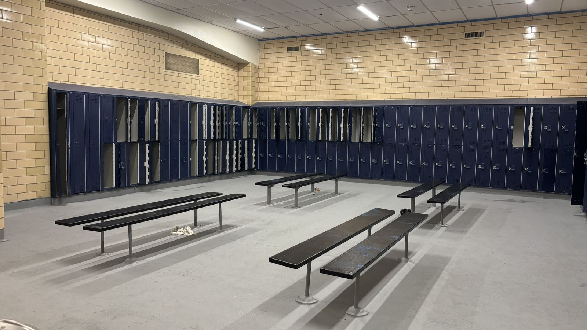
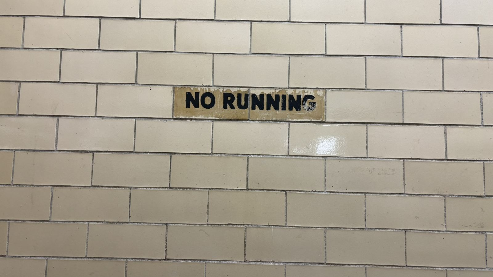
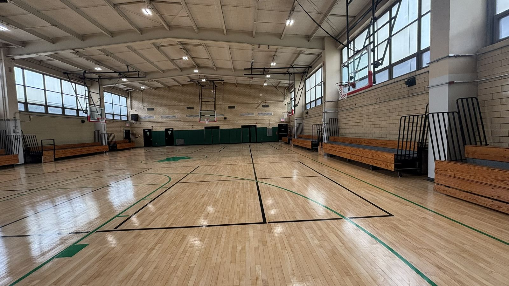
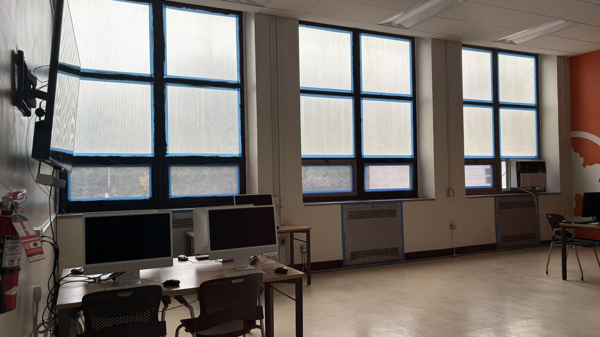
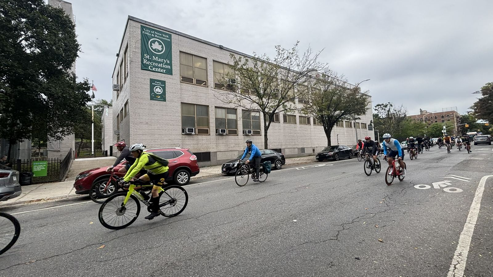

Bronx · Pool visit
You Don't Have to Live in the Bronx (or Even NYC) to Use St. Mary's
But if you're quick, you might get the whole pool to yourself.

On Wednesday, September 30, 2026, a listing I didn't recognize appeared on this site: St. Mary's Recreation Center in the Bronx. I didn't add it. The site pulls directly from NYC Parks data, and when the center reopened after its renovation, it simply showed up.
That was big news. According to the Bronx Times, St. Mary's had been closed for nearly four years and reopened that day after a $20.7 million renovation. It is the only indoor pool NYC Parks runs in the Bronx.
I was excited to try it, but getting confirmation wasn't easy. Nobody answered the phone when I called, and Google insisted the center was closed until Monday at 8 a.m. Still, Sunday morning was clear, I had a little time, and it's a 25-minute bike ride from my house. So I went, arriving around 9 a.m.
It was open.

The center sits at the corner of St. Anns Avenue and East 145th Street. From the street, the building looks fairly standard. The renovation reveals itself at the entrance: a courtyard lined with planters, new doors with the Parks leaf logo, and a bright green lobby that feels genuinely welcoming. So did the staff. The membership scanner wasn't working yet, so they looked me up by name, which took a minute but was no trouble.


The pool
The pool is 24 yards long and five lanes wide, running from 3 feet at the shallow end to 9 feet at the deep end. The water was crystal clear and the whole space was spotless. There's a spectator gallery with bleachers along one side, a big clock on the wall, and an accessible pool lift.

I was the only person in the pool, the locker room and the showers. The only familiar face was a lifeguard I know from Chelsea Pool, so we caught up while I swam. And one detail made me smile: an old hand-painted “No Running” sign on the original tile survived the renovation.


The rest of the center
St. Mary's is spacious. Beyond the pool there's a weight room, a cardio room, a large dance studio, a multipurpose room with chess and Connect Four set up, a computer room and a huge basketball court with built-in bleachers. Blue painter's tape was still on some of the windows. That's how new it is.


Riders from the 32nd annual Tour de Bronx were streaming down St. Anns Avenue that morning. It felt like the whole borough was out moving.

If you go
- You don't need to live in the Bronx, or even in New York City. NYC Parks sells recreation center memberships to visitors too: bring a government-issued ID to any center. The adult membership with pool access costs $150 a year or $75 for six months (what I paid), and it works at every Parks recreation center in the city. It's free if you're 24 or under, and IDNYC holders get 10 percent off. NYC Parks membership details.
- Don't rely on Google's hours yet. The center was open when Google said it wasn't.
- If you're biking, give yourself extra time. The nearest Citi Bike dock was full, and I had to ride around looking for a spot.
See this week's lap swim and open swim times on the St. Mary's Pool page.
Right now, it's one of the quietest pools in the city, with clean water, open lanes and staff happy to see you. Go use it while you have it almost to yourself.